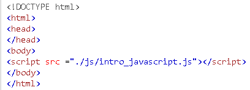

Para colocar o javascript na página web você deve usar a tag script, na tag body.
Da seguinte forma abaixo:
Esse arquivo deve estar em um diretório, e o seu caminho deve ser apontado relativamente.
O javascript é considerado uma linguagem fracamente tipada, ou seja ele internamente consegue manipular um valor de entrada e muitas vezes retornar o resultado esperado através de uma string.
Na tabela abaixo vemos alguns deses tipos.
| TIPO | EXEMPLO | Atribuição |
|---|---|---|
| number | 1, 5.019 | var numero = 2.56; |
| string | "casa", "1,2,3,4", 'teste', '1,2,3,4,5' | var string = "isso é uma string"; |
| boolean | true,false | true != false |
| null | definido pelo programador falsy element | var x = null; |
| undefined | definido pelo ECMA é também um falsy element | if(yx); no console dá undefined pois não se sabe o valor de yx |
| object | {id:2,nome:"josé}, [1,2,"teste",5] | var objeto_dic = {chave:2, key:4,senha:456}; |
O javascript possui três estruturas de decisão que podem retornar valores verdadeiros ou falsos. Elas são:
If/Else
O comando if/else é a principal estrutura de decisão, se a condição do if estiver verdadeira é retornada, senão vai para a condição else onde é retornada.
Uma boa prática no comando if é testar a sua negação e também colocar o caso mais comum em primeiro lugar , pois tudo entre as clausas será interpretado.
Switch
Testa um caso específico de igualdade e retorna valor para o usuário, caso a condição não esteja especificada é retornado o que estiver na claúsula default.
Operador Ternário ( ? )
pode ser utilizado para substituir o if em condições simples:
expressão_condicional ? true:false
Existem três estruturas básicas de repetição no javascript o comando while ,o comando do while e o comando for.
As estruturas de repetição como o próprio nome indica servem para executar comandos que seriam feitos ou realizados mais de uma vez, dentro de um bloco de código específico, como por exemplo, o procedimento de busca em uma lista com vários objetos.
Veja a tabela abaixo.
| COMANDO | ESTRUTURA | EXEMPLO |
|---|---|---|
| WHILE | while(condição){ código a ser executado} | while(true){console.log("oi");
break; } |
| DO WHILE | do { código a ser executado } while(condiçã); | var x = 1;
do{ console.log(x); x+=1; } while(x< 100); |
| FOR | for(declara variável;condição de verificaçao; incremento ou decremento da variável){código a ser executado} | for(let i=0;i<10;i++){ console.log(i); } |
Funções são um bloco de códigos que executam comandos específicos para um determinado programa, ele fica criado no arquivo .js e pode ser chamado de acordo com a necessidade.
Quando navegador carrega a página ele já carrega também as funções inclusas no código js.
O comando console.log("imprime na tela"); é um exemplo de função.
Para declarar uma função no javascript se utiliza a palavra function seguida do nome da função (parametros) e o bloco de instrução {}. Veja o exemplo abaixo:
function soma(a,b){
return a+b;
}